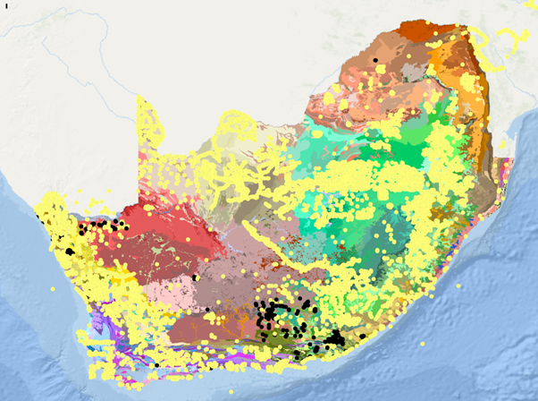

VEGMAP Project feedback:
The table is an overview of the progress since November 2024. Note that items completed in 2024 have been archived and only ongoing items are reflected:
| Description/actions | Priority rank (1-5) | Responsible person/s | Progress |
|---|---|---|---|
v A2 * Coert to share the names and titles of his students theses to add to the VEGMAP research projects list v * Kagiso and Anisha to investigate observations on iNat that can be harvested and linked to VEGMAPhoto v * Kagiso and Anisha to follow up with Coert on his landscape images from forest ecosystem types. v * Anisha to help Coert load the Google Earth version of NVM 2024. |
Coert Anisha, Kagiso Anisha, Londiwe, Esethu Anisha |
In Progress: Anisha to follow up with Coert. In Progress: We are exploring the AI Vision Language Demo in iNat to search for all habitat landscape images in South Africa as an easy way to find landscape images not yet tagged to VEGMAPhoto In Progress: Kagiso and Anisha liaising with Coert Complete. Files loaded onto Coert’s devices in April. |
|
| v A3 *Philip to submit a short motivation for the NW amendment | Philip | Complete. Philip submitted a motivation with a control sheet which was signed and appended to the original technical report. | |
| v B5 *Anisha to make two mock-ups of a poster using ideas from the committee and present those to Elizma from SANBI graphics and editing | Anisha | In Progress: We have been working with the head of the SANBI Interpretation Team who develops information resources for the public. Attached is one version of the poster we developed for the committee to review. | |
v B7 *VEGMAP team to continue with Mozambique edge-matching. v *Add the exploration of ecosystem types with a higher potential for change as a Phd to the research strategy |
Anisha, Mervyn, Andrew Anisha |
In Progress: A first meeting was held between the SA and Moz mapping teams and the areas of concern have since been identified. Gaps have been filled but an accurate border line would be useful to determine how to deal with overlaps. Complete. Project added to list. |
|
| v B8 *Explore building this (Exploring a vegetation type classification key) out into a pilot or student project and add it to the research strategy. | Anisha | In Progress: Anisha to follow up with Philip to develop a project outline and possible supervisors should a student and funding be found. | |
| v C9 *Anisha to send a setting the date for a subtyping workshop in 2025 and prepare an information pack to the NVMC and identify other key role players for the workshop. | Anisha | In Progress: Coert has students working in areas that were identified as gaps in our understanding during our first exercise in 2023. Therefore it may be best to put a workshop on hold until this work produces some data that may help us resolve the difficult areas. | |
| v C10 *Anisha to set up workshops to discuss EFGs crosswalks and SA functional groups with experts. | Anisha | In Progress: Workshop to be set with the Thicket experts in May/June 2025 | |
| v D12 *Possible KMs to the NBA writing retreat. | Andrew and Anisha | Complete. |
- A2 * Set a date with interested NVMC members to demonstrate how to upload images to VEGMAPhoto on iNat - * Update written instructions for VEGMPhoto for users |
Anisha, Kagiso Kagiso |
In Progress: A question was included with the NVMC meeting setting the date questionnaire to see how many would like a workshop In Progress: Kagiso will write a tutorial based on lessons he has learned helping upload CarryMap and iNat for people at conferences. He will also record an updated instructional video. |
|
| - A3 *TERG members to table and discuss names for group | TERG | In Progress: Name still under discussion but ‘VEGMAP Emerging Researchers Group’ has been tabled. | |
| - B6 *Share updated NWdraft of paper with NVMC | Philip | Complete. | |
| v *Explore standard drop-downs for certain fields | Anisha and Kagiso | On-going: This will be explored further when EDD is in a database. | |
| - D11 *Takethe RLE discussion to the local forums | Maphale | Complete. | |
| v D12 *Compare current functional groups with data in Richard Cowlings publication | VEGMAP Team | Little progress: Anisha to pursue later in the year | |
| - D13 *Follow up with NGI for high-res imagery | Anisha | Little progress: Still no luck getting in touch with someone to assist. | |
- A2 *Explore options for iNat from other Southern African countries v * Explore VEGMAPhoto and Rapid10 Link |
Anisha, Tony Anisha, Alastair |
Complete. Complete. Student appointed but later declined bursary |
|
| - * Calc search area for inclusion SAAFor reports. | Sam, Thapelo | Complete. | |
| v A2 *Kagiso to help Mervyn upload his iNat images | 2 | Anisha, Kagiso | Little progress: Kagiso to follow up. |
| - B8* Committee members to assist with facilitating partnerships with NVD contributors | 2 | All | On-going: Committee member have assisted resulting in signed DSA’s |
| - B3* Alastair to report on the name ‘Albany Subtropical Thicket’ or other alternatives | 1 | Alastair | On-going: Alastair will keep us updated. |
| - Develop draft classification hierarchy (per biome) –defining types vs. subtypes | 1 | Tony Rebelo, VegMap team | On-going: Tony and Anisha began discussions and initial research, and plan is being developed. We drafted some key thoughts. |
| - B3* Flag veg types with multiple biome affinities | 4 | Anisha and Alastair | Little progress. |
| Other ongoing tasks: P1* Follow-up VEGMAPhoto on iNaturalist arid landscape photos., Identify priority areas where the VegMap needs to be strengthened and refined, A4 Actions: *Going forward add a reference date for all forest polygons captured for future versions of NVM, Refine Functional Vegetation Group/Functional models for vegetation types, increase the profile of the vegetation map, Sign NVD data sharing agreements |
VEGMAPhoto (s Afr) Project on iNaturalist update:
We have collected observations for 301 vegetation types across the country so far, 25 more since out last update. Please have a look at Kagiso’s latest blog post for more information by clicking on the image below.
We have also been exploring a new vision language demo on iNat that uses search terms to find images of key words entered using AI. We have to interns Londiwe and Esethu helping enter various search terms to find other observations on iNat that have wide landscpe images that are not tagged to VEGMAPhoto yet. So far they have found several good images that we have tagged to our project but we are also workign our way understanding how to best use the tool effectively: https://www.inaturalist.org/vision_language_demo
Mapping and classification update:
The following mapping and classification work has been identified for future proposals in the coming years. This includes new information, existing information from older maps, or work emerging from our students:
Mapping:
Eastern Little Karoo: Annelise Vlok noted that a few polygons of Eastern Little Karoo should be reassigned to Willowmore Gwarrieveld and North Kammanassie Sandstone Fynbos. They are working with us to prepare a proposal and recommendation.
Bushmanland Inselberg Shrubland: 19 inselbergs mapped north of Springbok mapped by Laetitia Osborne based on plots she sampled in field. We will relook at these polygons and send to the NVMC to review.
Possible Forest/Riparian areas in Duiwenhoks: Data points sent through by Stehan Goets to be investigated with Coert.
Southern Afrotemperate Forest: Refined mapping by 2023 interns needs to be reviewed. Interns used georeferenced historical imagery for this mapping like we did with the mangroves for NVM 2024.
Classification and hierarchy:
- National Forest types work is ongoing with Coert Geldenhuys and will be discussed with the NVMC later this year.
Ecosystem description and definition
- Thapelo and Jubilant are publishing the plant communities for Frg3 and Gd6. Once their publications are out we will work together to add these community descriptions to the database for the respective types.
Terrestrial Emerging Researchers Group update:
Several of our emerging researchers have some exciting news. Below is an update on some of our members. Apologies if I have missed anyones good news. Please keep us updated if you have anything to share:
| Student/intern name | Insitution | Research Area | Outcome | Next steps |
|---|---|---|---|---|
| Jubilant Sithole | UFS | Drakensberg-Amathole Afromontane Fynbos (Gd 6) refinement | GRADUATED | Registered for Phd in Gd6 looking at effects of fire on communities, drafting papers from MSc |
| Thapelo Kgomo | Wits | Ecological communities and fire in Robertson Granite Renosterveld | PASSED, submitting corrections | Begins a new job as an ecological support technician in June, drafting papers from MSc |
| Kagiso Mogajane | SANBI | GS internship (ended December 2024) | Hired as Research Assistant until June 2025. Working on Ecosystem pressures for all types for NBA. |
In addition, some of our interns are co-authors on a popular article profiling past emerging scientists associated with VEGMAP and the version submitted to the CREW newsletter can be read here.
Progress on regional and global projects:
SBAPP: The SBAPP project continues with a near-final map of ecosystem types for Namibia. Work as been initiated to resolve cross-border issues between the South African and Mozambican maps.
IUCN-GET crosswalk review meetings with experts: The VEGMAP Teams has been road showing NVM2024beta and inviting experts to comment/review the IUCN crosswalk. There has been some interest and online workshops will be set up in the 2nd half of the year.
Global Ecosystems Atlas: The GEO team recently appointed Falko, a south African ecologist with connections to SANBI and he has reached out to work with us to connect him with collaborators known to us to help build ecosystem maps in the region.
Articles/products in production:
Draft for your review: NVM public poster 1: This version is aimed at school level and public level users. Please review and provide comment.
In production: NVM2024 beta updates paper, version contributors and reviewers will be invited for co-authorship.
In production: Jubilant Sithole masters paper on plant communities in Gd6, submitted to Koedoe
In production: Thapelo Kgomo masters paper on fire relative to plant communities in Robertson Granite Renosterveld.
NVD plot data transfer into BRAHMS and Data sharing agreements:
Little progress on data sharing agreements. Kagiso has obtained new references to capture for inclusion in the NVD.
In an effort to manage areas to focus on for the signing of Data Sharing Agreements we have plotted the locality of signed DSA’s spatially. We hope to use this spatially explicit mapping of NVD projects to find projects that may be related to data owners working in specific areas to help us trace NVD projects without an author assigned (more than 60% of projects) in the spreadsheet we have inherited.
